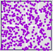

| The β factor of a stock is the volatilty of the stock relative to that
of the market. |
| β > 1 means the stock is more volatile than the market. |
| β = 1 means the stock and the market are equally volatile. |
| β < 1 means the stock is less volatile than the market. |
|
| The 1-4 diagonals of the tech stocks reflects larger daily percentage changes,
so we would expect higher volatility. |
| As a quantitative test of this, Thornton scaled the bin boundaries with each
stock's β. For example, Qwest has β = 2.15, so the first and third
bin boundaries are set at 2.15⋅2.5% = 5.38% above and below 0. |
| Here are the rescaled driven IFS (left), each grouped with its original (right) for
comparison. |
|
|
| American International: β = 0.85 |
|
|
| General Electric: β = 1.08 |
|
|
|
|
|  |
 |
|
| Tyson: β = 0.47 |
|
|
| Colgate-Palmolive: β = 0.76 |
|
|
|
|
| Note that in general rescaling the bin boundaries by the stock's β makes the
driven IFS look much alike. Note particularly the change in the Sonus IFS. |
| The obvious exception is Tyson, whose β is so small that the rescaling puts
many more points into bins 1 and 4.
|